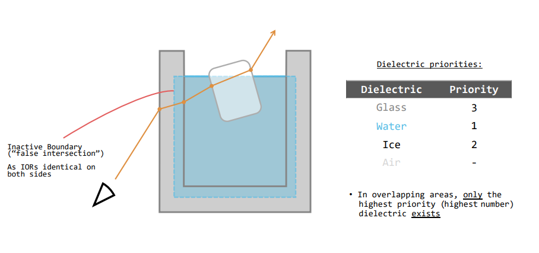
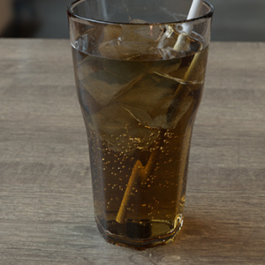
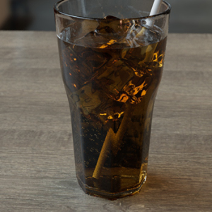
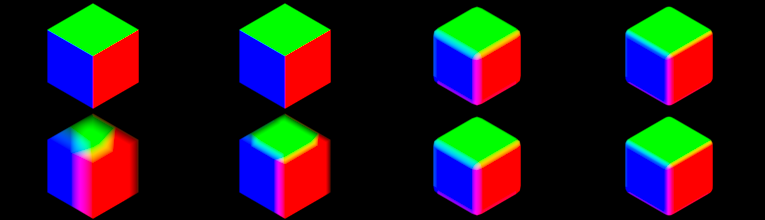
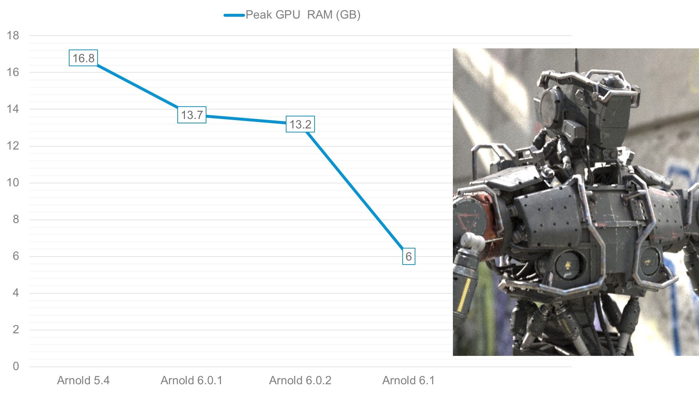

28 Oct 2020
MtoA 4.1.0 introduces Arnold 6.1.0.0 and is a major feature release bringing a brand new post-processing framework (imagers), support for nested dielectrics, much improved progressive and adaptive sampling, on-demand texture loading on GPU, several IPR update issues, an improved Tx manager, a new Log Window in the Arnold RenderView, as well as several other improvements and bug fixes. It is fully binary compatible with 4.0.* versions.
Autodesk Network Licensing in Arnold 6 requires new license files with an updated 2020 version . Please follow the instructions on this page to generate your license file. More info about Arnold 6 licensing can be found here .
Maya 2018, 2019 or 2020
Windows 7 or later, with the Visual Studio 2019 redistributable.
Linux with at least glibc 2.12 and libstdc++ 3.4.13 (gcc 4.4.7). This is equivalent to RHEL/CentOS 6.
OSX 10.11 to 10.15. Note that macOS 11 Big Sur is not certified.
CPUs need to support the SSE4.1 instruction set.
GPU rendering works on Windows and Linux only and requires an NVIDIA GPU of the Turing, Volta, Pascal, or Maxwell architecture. We recommend using the 455.38 or higher drivers on Linux and 457.09 (Quadro), 457.30 (GeForce) , or higher on Windows. See Arnold GPU for more information.
Optix™ denoiser requires an NVidia GPU with CUDA™ Compute Capability 5.0 and above.
We're introducing a brand new framework to apply post-processing effects such as color correction, vignetting, or tone mapping. A new type of post-processing nodes called imagers operate on pixels before the output driver. Imagers can be chained. The initial set of imagers consists of:
[imager_exposure](/pages/createpage.action?spaceKey=AFMUGTMP&title=Imager+Exposure&linkCreation=true&fromPageId=154764297)[imager_color_correct](/pages/createpage.action?spaceKey=AFMUGTMP&title=Imager+Color+Correct&linkCreation=true&fromPageId=154764297)[imager_lens_effects](/pages/createpage.action?spaceKey=AFMUGTMP&title=Imager+Lens+Effects&linkCreation=true&fromPageId=154764297)[imager_white_balance](/pages/createpage.action?spaceKey=AFMUGTMP&title=Imager+White+Balance&linkCreation=true&fromPageId=154764297)[imager_tonemap](/pages/createpage.action?spaceKey=AFMUGTMP&title=Imager+Tonemap&linkCreation=true&fromPageId=154764297)Imagers work both in batch and interactive contexts. While imager parameters can change interactively during rendering, adding a new imager currently requires the render to be restarted, so it's a good idea to add the ones you will need to adjust at the beginning of an interactive session. We are looking at removing this limitation in a subsequent release. (core#8368, core#9716, core#9723, core#9724, core#9867, core#9868, core#9869, core#9938).
Color Correct
Lens Effects ( vignetting)
Nested dielectrics : Physically-correct reflection and refraction of rays in scenes with adjacent dielectrics, such as liquids in glass vessels, has been implemented by resolving overlapping, i.e. "nested", dielectrics via a priority system. This allows for more realistic renders of scenes such as glass containers with liquid contents and bubbles, correctly accounting for the change in the index of refraction as rays refract through the transparent media. The new dielectric_priority parameter on the standard_surface shader assigns a priority to the internal dielectric medium of the closed transparent object the shader is assigned to. These priorities specify that in an area of overlap of two transparent objects, only the highest priority dielectric medium exists (see the schematic glass of water below). The priority is simply a signed integer (default 0), which can be increased or decreased as needed to define the dielectric medium in the overlap areas. If priorities are made equal, then media are effectively blended in the overlap. The effect can be disabled globally with options.dielectric_priorities ( Nested Dielectrics in the Advanced tab of the render settings) in case you need to revert to the legacy mode, which does not correctly compute the refractions. (core#6023)

 
Standard setup of a glass of water with an ice cube, using the priority system. Rollover image to view the result with the global dielectric_priority: disabled (not physically correct).
Nested dielectrics examples
Improved progressive and adaptive sampling : Better sampling now results in much faster noise convergence, especially with adaptive sampling enabled. (core#9941)
Left: Arnold 6.0.4.1 - Right: Arnold 6.1.0.0 - Both images rendered using the same settings: a daptive_threshold = 0.015 (default)
Improved performance on Windows : Arnold now runs on average 7-8% faster overall on Windows. (core#5481, core#9876, core#9975)
Improved IPR interactivity : IPR interactivity on both CPU and GPU, especially when moving the camera in a scene with many nodes (thousands to millions of meshes, ginstances, lights, shaders, etc.), is improved. For instance, a scene with 24,433 ginstances and simple shading went from 8 fps to 14 fps on the CPU and about 3 fps to 20 fps on the GPU. (core#8662, core#9918, core#10027, core#10029)
Improved performance in Toon on Windows: The contour_filter used for toon rendering should now be faster and scale better especially on Windows, with up to 3x speedups on AMD Threadripper 2 and up to 4x speedups on AMD Threadripper 3 CPUs. (core#7844)
Toon AOV prefix : The toon shader has a new optional aov_prefix that will be prepended to the toon AOVs' names. For instance, if aov_prefix is "toon_" , the toon diffuse AOV will be written out to "toon_diffuse" . This can be used when you need to access both the toon AOVs and the core's LPE AOVs. (core#9823)
Improved soft creases in adaptive subdivision : Normals for soft creases follow the geometry closer for low iterations. (core#9971)

All cube edges have sharpness 3 creases. The diagram shows the new (top) and old (bottom) normals for 1, 2, 3, and 4 iterations.
AA seed now included in EXR metadata : The AA seed of a render is now also included in EXR metadata. (core#9895)
Improved support for MaterialX : Material nodes are now supported, shader nodes and node graph outputs can be connected to material node inputs. Node definitions implemented as node graphs can contain both Arnold native shaders and MaterialX standard library shaders. This is useful to build reusable and portable material groups and definitions, for example by using standard_surface with MaterialX patterns. T he environment variable ARNOLD_MATERIALX_NODE_DEFINITIONS can now point to directories and load multiple node definitions ( [see here ) ( core#9204, core#9618, core#9926)
Added support for PhongE to the Arnold conversion script : the Shader conversion script will now convert PhongE shader networks as well (mtoa#4338)
Exposed USD overrides attribute : The aiStandIn node now exposes the USD procedural attribute overrides , which allows the user to add inline USD syntax (mtoa#4348)

arnold-<ARNOLD_VERSION>_driver-<DRIVER_VERSION> . Now it is simply arnold . This means the same cache will be used across driver and Arnold versions. Upgrading to a new version will still likely cause a lengthy JIT/cache pre-population, but it will reduce disk usage as old versions will not stay around-consuming disk space. (core#9239).Correct refractions with nested dielectrics : Refraction through adjacent transparent media now looks more physically correct thanks to nested dielectrics resulting in a look change. If you need to revert to the legacy unphysical behavior for compatibility reasons, you can disable nested dielectrics globally by setting options.dielectric_priorities to False.
mix_shader add for transparency : Previously, the add mode of the mix_shader also added the transparency closures, which means that effects such as min pixel width would be double-counted, leading to objects disappearing. Now, we will add only non-transparency closures, while we pass through the max of the transparency closures. The old behavior can still be obtained by setting add_transparency to true (core#9952).
Skipped node updates : In order to improve IPR interactivity, we skip the per-frame node update if we believe that node has not changed. If our internal heuristics for detecting node changes is wrong and node_update was supposed to be called, you can set the force_update metadata on your node:
node_parameters
{
AiMetaDataSetBool(nentry, nullptr, "force_update", true); // depends on camera node
// ...
} so that Arnold will always run node_update on every render pass. At the moment, this should only be needed for nodes that access options.camera in their node_update . If you do not have access to your shader's source code, you can globally disable this optimization by setting the options.enable_fast_ipr to false (core#8662).
mtoa#4312 populate_GPUCache() in utils.py uses Python 2 long()
mtoa#4286 [XGen] error in python 3 loading xgen ui script
mtoa#4298 Add extension for PreviewSurface shader
mtoa#4302 Standin UI : export look should support usd
mtoa#4318 Export prefix not working with slashes
mtoa#4327 Include Arnold SDK and docs in the MtoA install
mtoa#4329 Handle viewport display of custom procedurals
mtoa#4332 [TX Manager] Colorspace set in Tx Manager is not used
mtoa#4334 .osl shader not importing to MtoA as .ass file (from MAXtoA)
mtoa#4340 MtoA: unix_installer.sh will need updating to include python3 call
mtoa#4342 ARV: IPR is not always enabled when running "Render with ARV"
mtoa#4343 ARV: Remove useless "Converting 0 textures to tx" in status bar
mtoa#4351 [TX Manager] incorrect colorspace shown in spreadsheet
mtoa#4357 instance nodes returned in the viewport API not shown properly
mtoa#4358 Python errors in the standin ui cache
mtoa#4360 ARV camera menu not showing the correct render camera
core#5518 Handle interruptions properly during procedural expansion
core#9949 mesh_light with constant black texture causes degenerate light tree case
core#9971 Subdivs: soft creases normals different in adaptive and regular
core#9978 Viewport API doesn't apply the correct matrix for nested procedurals
core#10031 Only shader node connections should use node output type
core#9361 [GPU] OptiX assert when updating textures
core#10024 [GPU] Incorrect texture selection or error when invalidating the texture cache with GPU sparse textures
core#10026 [GPU] Rare crash in OptiX denoiser
core#10040 [GPU] Always report minor version field of Nvidia driver as two digits
core#10048 [GPU] Wrong progress reporting using adaptive
usd#513 Viewport representation in points mode doesn't have the correct matrix
usd#543 Visibility is not checked on the current frame
usd#556 motion_start and motion_end is only set if the matrix of the prim is animated
usd #565 Animated transforms not translated properly if set on parent XForms
usd#569 Render delegate not picking up OSL shader parameters
usd #570 USD procedural is not picking up OSL shader parameters
usd#574 Incorrect display of curve widths in Solaris when changing curve basis
usd#577 Point light should have zero radius
usd#580 The Render Delegate's depth range is incorrect if USD is at least version 20.02